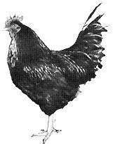

My husband, two small children and I live on a farm in Missouri. We raise almost every mouthful of food we eat and everything in our gardens, berry patches and fields is organically grown in rich, composted soil. Much of our produce is sold through our local health food store and directly to individuals concerned about the quality of the food they eat.
About a year ago we realized my flock of chickens was too small to supply our demand for eggs so, rather than wait long months for several incubator hatchings of chicks to grow to layer size, we decided upon an experiment: We would buy some run-down, drained hens from an egg farm; take them off their highly-stimulated commercial mash, rejuvenate them on our pure, unadulterated feed and make them lay profitably. Would it work? We decided to try.
We went to a nearby chicken farm and bought 50 scraggly laying hens. They were only about 2 years old, the age at which many commercial egg producers get rid of their "old" exhausted, worn-out layers. These birds surely looked it; they were half naked because their systems couldn't produce enough feathers while being drained of vitality by the forced laying. The feathers they did have were messy and bedraggled, not white and shiny. Their combs were pale and droopy instead of red and pert like those of my own healthy chickens. And the huge eggs they laid had very thin shells, pale yolks and watery whites. Infertile, of course.
We took them home.
Can you imagine the commotion in my hen house the next morning when the roosters discovered 50 new hens? Hens that didn't even know what roosters are for!
Since I love animals and wish for their comfort and contentment, the most pathetic aspect of these miserable creatures was their long, long toe nails. Why? Because, having been raised on a slat floor, they had been deprived of their favorite pastime-scratching. Picture chickens that always have to walk on a grate-like floor with toes protruding downward; there is no way for them to wear their nails down to proper length. And, having been thus confined, these birds didn't even know the luxury (as did my tiny 3-day-old chicks) of dusting the few feathers they had. But, even chickens keep up with their neighbors, so they soon learned (and loved it!) Of course, it was days and days before they were brave enough to venture from the poultry house into the outdoor world.
How those birds changed in a few months! Within days they quit laying altogether while their bodies concentrated on sprouting new feathers. Soon they were showing off new plumage and red combs to my own chickens instead of hiding under the bushes in embarrassment.
After many months some of the new birds again began laying eggs . . . although not as many as before. These eggs had thick, hard shells, bright orange-yellow yolks and firm whites. Several of the hens, though, never regained the gumption to lay. These I call "boarders", or soup hens.
Then came the day I decided to butcher several of these boarders.
Now, I am used to butchering healthy chickens; their insides are always so clean and neat and smooth and nice, with rarely anything wrong. So I wasn't prepared for what I found inside these birds. Every last one of them had odd lumps, hard swellings, growths and tumors throughout their innards. One poor hen had masses of tiny, hard, grainy growths-almost half the volume of her intestines! Others had shrunken breasts, enlarged portions of intestines, sick livers and grotesquely-formed, enlarged feather bases in their skin. All this messy abnormality was truly a sickening sight.
And then I had a horrible thought: If two-year-old hens can be so frighteningly deformed and sickened by their "scientific" diet and handling, what do doctors and surgeons find inside humans? Tumors? Cancers? Gall bladders and livers gone haywire? Hearts worn out?
After all, our foods are poisoned, sprayed, chemicalized, devitalized, pasturized, hydrogenated, overcooked and french-fried. The peels, germ, bran, vitamins and minerals are removed and discarded and what is left is artificially preserved, colored, flavored and textured. On top of which, we consume mountains of aspirin, sleeping pills, stimulants, energizers, pep-pills, tranquilizers, laxatives, antacids, reducing tablets, birth-control pills, alcohol, soft drinks and cigarettes.
I think the birds ate better!
Personally, we plan to continue raising all the food we eat in good, rich, composted soil. Health, strength and vitality are for the birds, alright. They're also for people, too!
|
 |
|
|